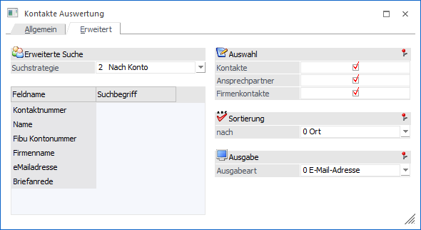
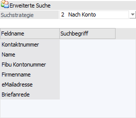
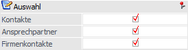
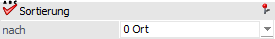
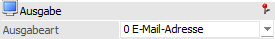

In dem Register "Erweitert" kann auf Grundlage einer zuvor angelegten Suchstrategie eine Auswertung der Kontakte bzw. Ansprechpartner erfolgen.
Hinweis
Die unterschiedlichen Suchstrategien werden in dem Programm "Vorlagen Anlage" (WinLine START - Vorlagen - Vorlagen Anlage - Stammdaten Kontakte - Vorlage als "Suchstrategie") definiert.

Erweiterte Suche

Ø Suchstrategie
An dieser Stelle kann eine zuvor angelegte Suchstrategie ausgewählt werden. Aufgrund der Suchstrategie wird die Selektionstabelle gefüllt.
Auswahl

Ø Kontaktart
Unter Optionen kann mittels Checkbox selektiert werden, welche Kontakte in der Auswertung gelistet werden sollen. Dabei ist eine Mehrfachauswahl möglich.
ü Kontakte
Es werden alle
Kontakte gelistet, die weder als Ansprechpartner noch als Firmen Kontakt einem
Konto zugeordnet wurden.
ü Ansprechpartner
Es werden alle
Ansprechpartner ausgegeben.
ü Firmen Kontakt
Es werden alle
Firmen Kontakte ausgegeben.
Sortierung

Ø Sortierung nach
Hier kann gewählt werden, nach welchem Kriterium die Sortierung auf der Auswertung erfolgen soll. Zur Auswahl stehen:
ü PLZ
ü Kontonummer
ü Name
Ausgabe

Ø Ausgabeart
Unter Anzeigeliste kann gewählt werden, welche Daten auf der Auswertung angedruckt werden sollen. Folgende Varianten stehen zur Verfügung:
ü E-Mail-Adresse
Die Kontakte
werden inklusive der E-Mail Adresse ausgegeben.
ü Telefon
Die Auswertung
beinhaltet sämtliche den Kontakt betreffende Telefonnummern.
ü Adresse
Es wird die Auswertung
inklusive der Adressdaten ausgegeben.
ü Kartei Ansicht
In der Kartei
Ansicht werden die Kontakte als Kartei angezeigt, die sowohl E-Mail Adresse,
sämtliche Telefonnummern und die Adresse beinhaltet.